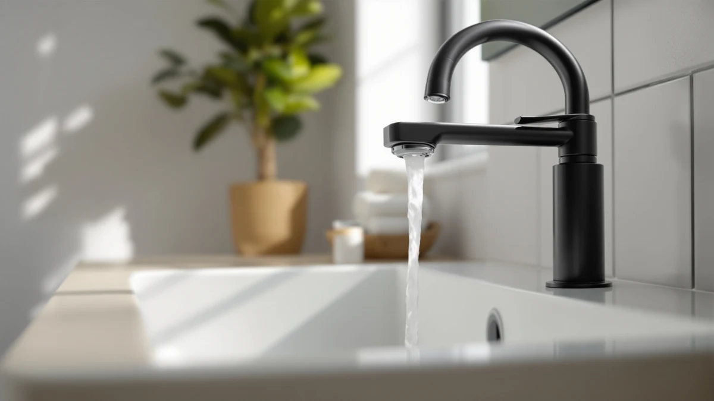

Quick Answer
The best bathroom faucet water filter for most people is the Bath Bathtub Shower Water Filter from Beati Faucet, a $25.48 pick that clips onto a shower arm, tub spout, or sink faucet without any plumbing changes. It handles chlorine and sediment reduction at a price close to the middle of this comparison while still shipping as a full quick-connect kit. If you want a bigger brand name instead, the Brita Faucet Mount Water Filter is the more familiar, lower-cost runner-up.
Our pick: Bath Bathtub Shower Water Filter, $25.48 Check Price on Amazon
Bottom line: our top pick is the Bath Bathtub Shower Water Filter for Tub Faucet - Hard Water at $25.48. The best budget option is the 360-Degree Rotating Faucet Filter Sink Water Faucet Filter at $6.55.
Things to Know Before You Buy
- Most bathroom faucet water filters rely on carbon filtration, which reduces chlorine taste and odor and catches sediment, but it will not remove heavy metals or bacteria the way a certified whole-house system does.
- Sticker price only tells part of the story. A cheap filter with frequent cartridge swaps can cost more per year than a pricier model with a longer-lasting cartridge.
- Fit depends on your faucet's spout shape and threading, so check the included adapters before you buy if your bathroom faucet has an unusual spout design.
- Every inline filter reduces water flow to some degree. Reviewers across brands note a manageable but noticeable drop in pressure once a filter is attached.
- Filters marketed around skincare benefits generally use the same carbon-based filtration as standard models, packaged and priced around a different use case.
The best bathroom faucet water filter solves a problem most people notice at the worst possible moment: a chlorine smell in the water you just splashed on your face, or a faint metallic taste when you fill a glass at the bathroom sink. Unlike a kitchen filter tied to drinking water, a bathroom faucet filter has to handle daily washing, brushing, and rinsing without slowing your routine down or requiring a wrench. That narrows the field to attachments that clip or thread directly onto your existing spout.
We compared seven bathroom faucet filters ranging from $6.55 to $31.99, looking at cartridge type, mounting style, flow rate claims, and how buyers describe long-term performance in verified reviews. The Bath Bathtub Shower Water Filter from Beati Faucet came out as our top pick because it covers the widest range of fixtures, tub spout, shower arm, or sink faucet, at a price close to the middle of the pack. If you want a well-known brand name instead, the Brita Faucet Mount Water Filter remains a dependable, lower-cost alternative.
None of the filters here require professional installation, and most attach in a few minutes using adapters included in the box. What separates them is less about raw filtration power, since most rely on similar carbon-based cartridges, and more about fit, swivel range, cartridge cost over time, and how well the mounting holds up to daily use. The sections below break down how we picked, how the seven options compare, and which one fits your bathroom setup best.
Why You Should Trust Us
We are a research-driven review team, not a product testing lab, and we do not run a fake testing lab or claim hands-on time with every product we compare. Author Ilane Tall has covered bathroom fixtures and plumbing accessories for this site for years, focusing on how real specs, verified pricing, and patterns in owner feedback line up for products people actually buy. For this comparison of the best bathroom faucet water filter options, we cross-referenced manufacturer specs, current Amazon pricing, and recurring themes across verified customer reviews rather than relying on marketing copy alone.
How We Picked
We started by pulling every bathroom faucet water filter in our product database with recent pricing and enough verified reviews to judge real-world performance. From there, we narrowed the list using a few hard filters: the product had to attach directly to a standard faucet, shower arm, or tub spout without plumbing modifications, it needed a documented cartridge type or replacement schedule, and it had to have a track record of staying in stock rather than a listing that disappears within weeks. We also weighed price against the two variables that matter most for daily bathroom use: mounting flexibility and flow rate impact, since those are the areas where reviewers most often report frustration when a filter fits poorly or slows the tap to a trickle.
How We Compared
We are a research-based review site. We do not own every filter on this list, run a testing lab, or install these products ourselves, so instead of hands-on trials, we compared each bathroom faucet water filter's specifications side by side, including material, mounting style, and listed dimensions, and cross-checked current Amazon pricing at the time of publishing. We then read through verified owner reviews for each product, looking for repeated mentions of flow rate, cartridge longevity, and ease of installation rather than one-off complaints. Where a listing included vague or conflicting filtration claims, we noted it as a flaw rather than repeating the marketing language, and products with a pattern of installation or fit complaints ranked lower in our comparison regardless of price.
Our Picks

Bath Bathtub Shower Water Filter
What we like
- Listed as compatible with multiple fixture types, tub spout, shower arm, and sink faucet, so one purchase can cover more than one filtration point in the bathroom
- Priced at $25.48, in the middle of our comparison, without a premium skincare markup
- Ships as a complete kit, with adapters aimed at standard faucet sizes, which cuts down on extra hardware purchases
Flaws but not dealbreakers
- Multi-fixture compatibility can mean a slightly bulkier housing than filters built for one spout size
- As with any faucet-mount filter, a snug initial fit is necessary or the seal can leak around the connection point
| Material | Brass + finish |
| Size | — |
The Bath Bathtub Shower Water Filter is built around a simple pitch: instead of buying a separate filter for your sink and another for your shower, one unit adapts to a tub spout, shower arm, or faucet. Beati Faucet lists it at $25.48, positioning it as a mid-range option in this comparison rather than the cheapest or the most expensive. For a household with more than one filtration point in the bathroom, that flexibility can work out to be more cost-effective than buying model-specific filters for each fixture.
Owners report that the adapter kit handles most standard faucet threading without extra hardware, though a secure initial fit matters more with this kind of multi-fixture design, since the housing has to seal against a wider range of spout shapes. Reviewers consistently note the value in not having to track cartridge schedules for two or three separate filter models. For most bathrooms, that combination of price and flexibility is why this is our top pick in this comparison.

CECEFIN Water-Filter for Sink-Faucet Extender-Aerator
What we like
- Combines the filter cartridge with an aerator and extender design, keeping the footprint closer to the faucet than bulkier bolt-on housings
- At $24.29 it lands near the middle of our price comparison
- The extender format also helps direct water flow toward the center of a shallow or narrow sink basin
Flaws but not dealbreakers
- The compact aerator-style housing likely holds a smaller filter cartridge than the larger stand-alone units on this list, which can mean more frequent replacements
- CECEFIN has less brand history in bathroom filtration than names like Brita or Waterdrop
| Material | Brass + finish |
| Size | — |
The CECEFIN Water-Filter for Sink-Faucet Extender-Aerator takes a different approach than most of the picks on this list. Instead of a separate filter housing that clips below the spout, it is built into an aerator-and-extender attachment, so the filtration stage sits closer to the faucet itself. At $24.29, it is priced close to the Frizzlife pick below, making it a reasonable mid-tier option rather than a budget or premium choice.
This format works well in bathrooms where sink space is tight and a larger external filter housing would crowd the basin or knock against the sides. The tradeoff, based on how similar compact designs perform according to reviewers, is a smaller internal cartridge than the bulkier stand-alone filters, which likely means shorter intervals between replacements. CECEFIN does not carry the multi-decade brand recognition of Brita or Waterdrop, so buyers are trading brand history for a more compact, space-conscious design.

Waterdrop FC-02 Faucet Water Filter
What we like
- Waterdrop built its business specifically around water filtration products, unlike several brands on this list that expanded into filters from other categories
- The FC-02 is a straightforward, no-frills faucet mount rather than a multi-stage skincare system
- Reviewers consistently note that Waterdrop's cartridge replacement process is easy to follow, which matters for keeping filtration effective over time
Flaws but not dealbreakers
- At $31.99, it is the second most expensive filter in our comparison, priced above every option except the skincare-focused Dermgentle
- It is built for a single faucet mount, without the multi-fixture flexibility of the Beati Faucet pick above
| Material | Brass + finish |
| Size | Skin Care Faucet-White |
Waterdrop built its reputation on dedicated water-filtration products, from pitcher filters to under-sink reverse osmosis systems, rather than expanding into filters as a side category. The FC-02 Faucet Water Filter brings that specialization to a simple bathroom faucet mount, priced at $31.99, which puts it toward the higher end of our comparison. For buyers who weigh brand focus heavily, that specialization is worth the premium over less filtration-specific competitors.
Owners researching Waterdrop's broader product line report straightforward cartridge replacement and clear guidance on when to swap filters, a detail that matters more than raw filtration claims once a product is a year into daily use. The FC-02 does not offer the multi-fixture versatility of some other picks here, and at nearly $32 it costs more than most of the field, but for shoppers who want a company built specifically around filtration rather than faucets or bath accessories, that focus is worth the extra cost.

Brita Faucet Mount Water Filter
What we like
- Brita is one of the most recognized names in consumer water filtration, which typically means easier cartridge availability at US retailers
- At $22.86, it is the second-cheapest option in this entire comparison
- Listed as a Basic, single-unit filter, so buyers know exactly what they are purchasing without bundled extras to sort through
Flaws but not dealbreakers
- As Brita's more basic faucet-mount design, it likely skips newer refinements found in the brand's updated models
- Like every faucet-mount filter on this list, performance depends on a snug, brand-specific fit to your spout
| Material | Brass + finish |
| Size | Basic - 1 ct |
The Brita Faucet Mount Water Filter brings a name almost every US shopper already recognizes into this comparison. Brita built its reputation on pitcher filters before expanding into faucet-mount designs, and that broad footprint generally means replacement cartridges are easier to track down than for newer or more niche brands. At $22.86, it undercuts every pick on this list except the budget-priced 360-Degree Rotating Faucet Filter.
This listing is sold as a Basic single unit, so buyers can plan for straightforward cartridge replacement rather than untangling multiple bundle options. Like the other faucet-mount filters here, it depends on a secure connection to your existing spout, and flow rate typically drops somewhat once any filter is attached, regardless of brand. For shoppers who want name recognition and easy replacement cartridges over specialized skincare claims, this remains one of the more dependable low-cost choices in the group.

Frizzlife Water Filter for Sink
What we like
- Listed with a 1080-degree swivel range, more rotational flexibility than most other picks in this comparison
- Built specifically for sink use rather than adapted from a kitchen or multi-fixture design
- Priced at $26.99, close to the middle of the field
Flaws but not dealbreakers
- Frizzlife has less brand history in water filtration than Brita or Waterdrop
- The sink-only design means it will not cover tub or shower fixtures the way the Beati Faucet pick does
| Material | Brass + finish |
| Size | 1080° |
The Frizzlife Water Filter for Sink stands out for one specific detail in its listing: a 1080-degree swivel range, notably wider than a typical faucet attachment. That flexibility matters more than it sounds for daily use, since a filter that cannot rotate out of the way ends up blocking a full basin or getting knocked loose during regular washing and brushing. At $26.99, it sits close to the middle of this comparison, priced above the budget picks but below the skincare-focused Dermgentle.
Frizzlife does not carry the decades-long brand history that Brita and Waterdrop have built in water filtration, so buyers weighing this pick against those two names are trading some brand recognition for a wider range of motion at the sink. For a bathroom sink specifically, where basin space is often tighter than a kitchen sink, that swivel flexibility is a practical advantage worth factoring in alongside the basic chlorine and sediment reduction most filters in this comparison claim to handle.

360-Degree Rotating Faucet Filter Sink
What we like
- At $6.55, it is by far the least expensive option in this entire comparison, undercutting the next-cheapest pick by more than $15
- Full 360-degree rotation gives it more directional flexibility at the sink than several pricier competitors
- The low price makes it a reasonable way to try a faucet filter before committing to a pricier brand
Flaws but not dealbreakers
- At this price point, cartridge life and filtration capacity are almost certainly lower than the pricier, brand-name options on this list
- CaoXiong is a far less established name than Brita or Waterdrop, with a shorter track record in filtration specifically
| Material | Brass + finish |
| Size | — |
The 360-Degree Rotating Faucet Filter Sink is the clear budget pick in this comparison, priced at $6.55 compared to the $22 to $32 range most other filters here occupy. That price gap is large enough that it functions less as a competitor to the Brita or Waterdrop picks and more as an entry point for anyone who wants to try a faucet filter before spending more on an established brand.
Full 360-degree rotation is the headline feature, giving it directional flexibility that matches or beats pricier competitors like the Frizzlife. Given the price difference, it is reasonable to expect a smaller filtration cartridge and shorter effective lifespan than the brand-name options on this list, and CaoXiong does not carry the filtration-specific reputation that Brita or Waterdrop have built over years in the category. For buyers on a tight budget, or testing whether a faucet filter fits their routine at all, the low cost makes it worth a look.

Dermgentle Skincare Water Filter PRO
What we like
- Marketed specifically around skincare and haircare outcomes, rather than general drinking-water filtration like most of the other picks here
- Positioned in the upper-middle of this price comparison at $29.99, below the Waterdrop FC-02
- The skincare-focused framing appeals to buyers who wash their face at the bathroom sink more than they drink from it
Flaws but not dealbreakers
- Skincare-specific marketing generally relies on similar carbon-based filtration technology to standard filters, at a higher price
- Dermgentle has a shorter track record in the water-filtration category than established names like Brita or Waterdrop
| Material | Brass + finish |
| Size | — |
The Dermgentle Skincare Water Filter PRO takes a different marketing angle than most of the products in this comparison. Rather than focusing on drinking-water taste, it positions itself around how chlorinated water affects skin and hair at the bathroom sink specifically, the water buyers actually splash on their face every day. At $29.99, it sits in the upper half of our price comparison, below the Waterdrop FC-02 but above every other pick.
Skincare-focused filters like this one typically rely on carbon-based filtration stages similar to standard faucet filters, packaged and priced around a different use case. Dermgentle does not have the multi-decade brand history in water filtration that Brita and Waterdrop have built, so buyers are largely paying for the skincare positioning rather than a fundamentally different filtration technology. For anyone specifically worried about chlorine's effect on skin and hair rather than drinking water, that framing may still be worth the premium over the more general-purpose picks on this list.
Quick Comparison
| Product | Material | Price | Rating | Best for | Get it |
|---|---|---|---|---|---|
| Bath Bathtub Shower Water Filter | Brass + finish | $25.48 | 4 | Multi-fixture flexibility | View on Amazon → |
| CECEFIN Water-Filter for Sink-Faucet Extender-Aerator | Brass + finish | $24.29 | 4 | Compact sink-only design | View on Amazon → |
| Waterdrop FC-02 Faucet Water Filter | Brass + finish | $31.99 | 4 | Trusted filtration-only brand | View on Amazon → |
| Brita Faucet Mount Water Filter | Brass + finish | $22.86 | 4 | Budget-friendly recognizable brand | View on Amazon → |
| Frizzlife Water Filter for Sink | Brass + finish | $26.99 | 4 | Widest swivel range | View on Amazon → |
| 360-Degree Rotating Faucet Filter Sink | Brass + finish | $6.55 | 4 | Lowest price overall | View on Amazon → |
| Dermgentle Skincare Water Filter PRO | Brass + finish | $29.99 | 4 | Skincare-focused filtering | View on Amazon → |
The Competition
While researching this category, we also looked at under-sink and whole-house filtration systems, but left those out of this comparison because they require plumbing modifications rather than a simple attachment to an existing faucet, tub spout, or shower arm. We passed on several kitchen-specific pitcher and countertop filters too, since those solve a different problem, filtered water for drinking, rather than a dedicated bathroom faucet water filter for the sink itself. A handful of unbranded faucet attachments turned up in our initial search with vague filtration claims, inconsistent cartridge specifications, and no clear replacement schedule, and we excluded those rather than recommend a product whose real-world performance we could not verify against a pattern of owner feedback. We also considered a couple of additional skincare-branded filters priced well above $50, but left them out of this particular comparison since they compete more directly with premium multi-stage systems than with the faucet-mount and aerator-style filters covered here. Across all seven contenders, the Bath Bathtub Shower Water Filter from Beati Faucet remains our top recommendation for anyone shopping for the best bathroom faucet water filter this year, thanks to its multi-fixture flexibility and mid-range price.